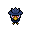

Pokédex / #198

Murkrow #198
DarkFlying
It is said that when chased, it lures its attacker onto dark mountain trails where the foe will get lost.
Generation 2 · Johto
Stats
| Attack | 85 | |
|---|---|---|
| Defense | 42 | |
| Sp. Atk | 85 | |
| Sp. Def | 42 |
In the wild
| Wild level | 40–50 |
|---|---|
| HP | 60 |
| Experience | 12 |
| Egg groups | Flying |
Evolution
- Does not evolve.
Moves
| Level | Move | Type | Category | Power | Energy | Cooldown | Effect | |
|---|---|---|---|---|---|---|---|---|
| 1 | Tackle | Normal | Physical | 15 | 15 | 1s | Tackle is one of the most common and basic moves a Pokemon learns. It deals damage with no additional effects. | |
| 5 | Peck | Flying | Physical | 35 | 35 | 6s | Peck inflicts damage and has no secondary effect. | |
| 10 | Drill Peck | Flying | Physical | 80 | 80 | 12s | Drill Peck inflicts damage and has no secondary effect. | |
| 15 | Night Slash | Dark | Physical | 70 | 70 | 11s | Night Slash deals damage and has an increased critical hit ratio. | |
| 20 | Assurance | Dark | Physical | 60 | 70 | 13s | Assurance does damage and has no secondary effect. | |
| 25 | Wing Attack | Flying | Physical | 60 | 70 | 14s | Wing Attack inflicts damage and has no secondary effect. | |
| 30 | Roost | Flying | Status | – | 90 | 120s | User recovers half of its max HP. Flying types temporarily lose Ground type immunity. | |
| 35 | Dark Pulse | Dark | Special | 8 | 95 | 18s | Dark Pulse deals damage and has a 20% chance of causing the target to flinch. | |
| 40 | Pursuit | Dark | Physical | 40 | 40 | 6s | Pursuit deals damage and has no secondary effect. | |
| 45 | Haze | Ice | Status | – | 100 | 120s | Resets all stat changes. | |
| 50 | Sucker Punch | Dark | Physical | 80 | 80 | 12s | Sucker Punch deals damage and has no secondary effect. | |
| 55 | Foul Play | Dark | Physical | 95 | 105 | 20s | The user turns the target's power against it. The higher the target's Attack stat, the greater the move's power. | |
| 60 | Mirror Move | Flying | Status | – | 130 | 25s | Mirror Move copies the target's last move. If there isn't a last move, copy random. | |
| 65 | Sky Attack | Flying | Physical | 140 | 140 | 24s | Nothing will happen on the first turn. On the second turn, Sky Attack deals damage and has a 30% chance of causing the target to flinch. | |
| 70 | Tailwind | Flying | Status | – | 80 | 40s | Tailwind doubles the speed of all Pokemon in the user's party for 10 seconds. |
Field abilities
Find
Special abilities
InsomniaSuper Luck
Egg moves
AssuranceBrave BirdConfuse RayDrill PeckFeather DanceFaint AttackFlatterMirro MovePerish SongPsycho ShiftRoostScreechSky AttackWhirlwindWing Attack
Technical machines
Aerial AceBideCalm MindDouble EdgeDouble TeamDream EaterIcy WindMimicMud SlapNightmarePsychicRageRain DanceRestShadow BallSteel WingSubstituteSwiftTauntThunder WaveToxic
Drops
| Item | Amount | Chance | |
|---|---|---|---|
| bunch of wheat | 1–3 | 79.5% | |
| bunch of sugar cane | 1 | 63.6% | |
| feather | 1 | 35.4% | |
| black orb | 1 | 31.8% | |
| downy feather | 1 | 15.9% | |
| night orb | 1 | 10.6% | |
| sharp beak | 1 | 9.09% | |
| colourful feather | 1 | 6.36% | |
| dark claws | 1 | 5.3% | |
| red apple | 1–5 | 5% | |
| dark crystal | 1 | 3.18% | |
| royal feather | 1 | 2.12% | |
 | murkrow doll | 1 | 0.1% |
| Dread Plate | 1 | 0.05% | |
| Sky Plate | 1 | 0.05% | |
| held black glasses | 1 | 0.01% | |
| held sharp beak | 1 | 0.01% |